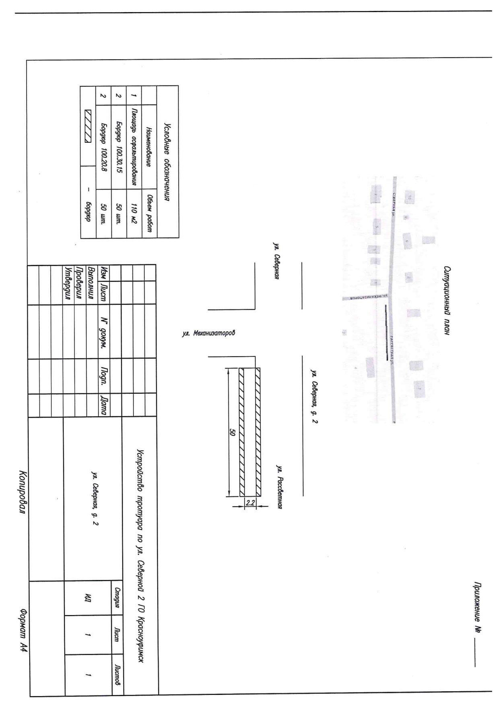

Устройство тротуара у дома № 2 по ул. Северной в ГО Красноуфимск
Новый асфальтовый тротуар 50 × 2,2 м с щебёночным основанием и 100 м бортового камня. Муниципальный заказчик, твёрдая цена, жёсткий срок — до 15 июля 2026.
44-ФЗ · запрос котировокподача до 18.06.2026 07:00 ЕКБработы до 15.07.2026гарантия 6–8 лет + ОГО 10%дорожные работы — наш профиль стройнаправления
Паспорт закупки
НМЦК
490 649,71 ₽
смета ресурсно-индексная, в т.ч. НДС 22% — 88 478 ₽
Заказчик
МКУ «Служба единого заказчика»
ИНН 6619007355 · директор Е.Г. Мартьянов · г. Красноуфимск
Площадка
РТС-тендер
аккредитация ИП Дедков есть (подача через dv01 отработана)
Подача заявок
до 18.06.2026
07:00 ЕКБ (05:00 МСК) · итоги 19.06.2026
Срок работ
до 15.07.2026
старт — с даты заключения контракта. На всё ≈ 2–3 недели
Оплата
7 раб. дней
после приёмки в ЕИС · аванса нет · бюджет ГО Красноуфимск
Обеспечение заявки
4 906,50 ₽
1% НМЦК (по извещению), блокируется на спецсчёте
Обеспечение контракта
49 064,97 ₽
10% НМЦК · деньги или независимая гарантия
Гарантийные обязательства
49 064,97 ₽
ещё 10% НМЦК — до конца гарантийного срока (6–8 лет!)
Главный «подводный камень» закупки. Помимо обычного обеспечения контракта заказчик требует обеспечение гарантийных обязательств — ещё 10% от НМЦК. Гарантийный срок на основание — 6 лет, на верхний слой асфальта — 8 лет (при интенсивности <1000 авто/сутки). То есть 49 тыс. ₽ либо замораживаются на годы, либо ежегодно платим банку комиссию за независимую гарантию (~3–5% годовых). Это нужно сразу закладывать в экономику.
Что нужно сделать — по-простому
Вдоль дома № 2 по ул. Северной (участок между ул. Механизаторов и ул. Рассветной) сейчас тротуара нет. Нужно построить его с нуля:
Выкопать корыто и подготовить основание. Снять грунт (9 м³ под бордюры выкапывается экскаватором, грунт — 16,2 т — вывезти), спланировать полосу 50 × 2,2 м.
Отсыпать щебёночное основание 25 см. 35,75 м³ щебня М800 фр. 20-40, разровнять (грейдер/погрузчик) и укатать катком.
Установить 100 м бортового камня в бетонную обойму. С двух сторон дорожки: 50 шт. дорожного БР 100.30.15 (В30) и 50 шт. тротуарного БР 100.20.8 (В22,5), на бетон В22,5 — 5,9 м³.
Уложить асфальт 4,5 см. Розлив битумной эмульсии (88 кг), укладка горячей смеси А8 ВЛ — 13 т на 110 м², укатка. В смете заложен асфальтоукладчик, по факту на ширине 2,2 м укладывают вручную с виброплитой и катком 1,5–3 т.
Сдать работы. Акты скрытых работ (основание!), КС-2/КС-3, исполнительные схемы, паспорта качества на смесь/бетон/бордюр, фотоотчёт каждого этапа. Заказчик имеет право отобрать керны — восстановление за наш счёт.
Организационные обязанности подрядчика по ТЗ: ордер на земляные работы + согласование со всеми сетевиками, схема ограждения и знаков с согласованием ГИБДД, ответственный на объекте, фотофиксация до/во время/после. Это 3–5 рабочих дней бумажной работы до старта — при дедлайне 15.07 тянуть нельзя.

Схема из закупки: полоса 50 × 2,2 м (110 м²), бордюр 100.30.15 — 50 шт., бордюр 100.20.8 — 50 шт. Ситуационный план — ул. Северная между Механизаторов и Рассветной.
Смета заказчика по позициям
Локальный сметный расчёт (ГРАНД-Смета, I кв. 2026, ресурсно-индексный метод). Суммы — «всего в текущем уровне цен», без НДС.
#
Позиция
Объём
Сумма, ₽
Раздел 1 · Устройство тротуара и заездов во дворы
1
Устройство подстилающих и выравнивающих слоёв основания из щебня (работы: бульдозер, грейдер, погрузчик, каток 30 т)
27,5 м³
39 018
2
Щебень М800 фр. 20-40 мм
35,75 м³
46 856
3
Устройство покрытия из горячей а/б смеси (работы)
110 м²
10 624
4
Эмульсия битумно-катионная ЭБДК Б
0,088 т
2 402
5
Добавка за толщину покрытия (итого 4,5 см)
110 м²
966
6
Смесь асфальтобетонная А8 ВЛ на БНД
13,02 т
79 137
Раздел 2 · Устройство бортовых камней
7
Разработка грунта в отвал экскаватором
9 м³
694
8
Погрузка грунта в самосвал
16,2 т
1 702
9
Перевозка грунта самосвалами
16,2 т
2 673
10
Установка бортовых камней бетонных (работы — самая «жирная» позиция: ФОТ 38,5 тыс.)
100 м
150 899
11
Бетон В22,5 (БСТ, F200, W6) для обоймы
5,9 м³
30 801
12
Камни бортовые БР 100.20.8, В22,5 (М300)
0,8 м³ (50 шт.)
13 103
13
Камни бортовые БР 100.30.15, В30 (М400)
2,15 м³ (50 шт.)
23 298
Итого без НДС (в т.ч. ФОТ 47 296 · накладные 69 424)
402 172
НДС 22%
88 478
ВСЕГО по смете (= НМЦК)
490 650
Налоговый бонус для ИП Дедкова. В смете сидит НДС 22% (88,5 тыс. ₽), а мы платим НДС 5%. Цена контракта при этом не урезается — упрощенцу платят полную сумму. Фактически это ~80 тыс. ₽ встроенного запаса относительно сметной логики заказчика.
Карта конкурентов. Дорожные закупки МКУ «СЕЗ» за последний год стабильно забирают двое местных — ООО «Строительная компания» (6 побед) и ООО «Техник» (4 победы), почти всегда как единственные участники. Глубокие «падения» −83…−99% в их контрактах — это рамки содержания дорог по единичным расценкам, а не демпинг. Выводы: (1) скорее всего на тротуар выйдут 1–2 местных участника — глубокого падения не ожидаем, верх вилки оправдан; (2) у заказчика 108 штрафов поставщикам — к приёмке и срокам относиться максимально серьёзно.
Наша оценка затрат
Диапазоны: нижняя граница — местные подрядные ресурсы (Красноуфимск), верхняя — всё везём из Екатеринбурга (≈200 км).
Статья
Комментарий
Оценка, ₽
Материалы
Щебень М800 фр. 20-40, 36 м³ (~54 т)
1 250–1 500 ₽/м³ с доставкой; в смете 1 311 ₽/м³
45 000 – 54 000
А/б смесь тип А (А8 ВЛ), 13 т
5 800–6 800 ₽/т; критично найти АБЗ поближе (Красноуфимское ДРСУ / Ачит), иначе смесь остынет
75 000 – 89 000
Эмульсия битумная, 90 кг
розлив вручную
3 000 – 5 000
Бетон В22,5, 5,9 м³
5 500–6 500 ₽/м³, миксер в Красноуфимске есть
32 000 – 38 000
Бордюр БР 100.30.15, 50 шт.
480–650 ₽/шт.
24 000 – 33 000
Бордюр БР 100.20.8, 50 шт.
260–360 ₽/шт.
13 000 – 18 000
Работы, техника, логистика
Бригада 4 чел. × 6–8 смен
корыто, бордюр (100 м — основная трудоёмкость), укладка
70 000 – 100 000
Механизация
экскаватор-погрузчик 3–4 смены, каток 1,5–3 т, виброплита
Рабочая середина (местный АБЗ + частично своя бригада)
≈ 395 000 – 420 000
Ценовой ориентир
Маржа при себестоимости ≈ 400–420 тыс. ₽ (до налогов УСН/НДС 5%):
490 650 ₽(НМЦК)
маржа ≈ 70–90 тыс. · 15–18%
465 000 ₽(−5%)
маржа ≈ 45–65 тыс. · 10–14%
440 000 ₽(−10%)
маржа ≈ 20–40 тыс. · 5–9%
420 000 ₽(−14%)
около нуля — не опускаться
367 987 ₽(−25%)
порог антидемпинга (ст. 37: ОИК ×1,5)
Рекомендация
Подавать 460 000 – 480 000 ₽, стоп-цена 440 000 ₽
Котировка маленькая и «локальная»: главные конкуренты — красноуфимские/ачитские дорожники с собственным АБЗ, для них себестоимость ниже нашей на логистику. Если идём — то с расчётом на умеренное падение (победители таких ЗК обычно в −3…−12% от НМЦК). Ключевое условие рентабельности: договориться о местной а/б смеси и миксере до подачи. Без местного плеча экономика на грани — тогда лучше пропустить.
Риски
Заморозка денег
ОГО 10% (49 тыс.) держится весь гарантийный срок — 6–8 лет. Либо независимая гарантия с ежегодной комиссией. Плюс ОИК 10% до приёмки.
Срок — 15.07.2026
Контракт заключат ~25–29.06. Остаётся ~2,5 недели на ордер, согласования и стройку. Просрочка = пени 1/300 ставки ЦБ в день от остатка.
Логистика 200 км
Горячий асфальт с екатеринбургских АБЗ не довезти — нужен местный завод. Перебазировка техники съедает до 40 тыс.
Приёмка с кернами
Заказчик вправе отбирать керны (толщина/уплотнение). Восстановление вырубок — за наш счёт. Качество укладки контролировать жёстко.
Чек-лист подачи (РТС-тендер)
Пополнить спецсчёт: обеспечение заявки 4 906,50 ₽
Заявка на РТС: согласие на условия + цена (workflow подачи через dv01 отработан — см. ДГБ Каменск)
Декларации соответствия ст. 31 — галочки на площадке; СМП-декларация не требуется (закупка для всех)
Документы из ЕРУЗ подтягиваются автоматически (ЕГРИП, паспорт)
Перед подачей — позвонить на местные АБЗ (Красноуфимское ДРСУ) и зафиксировать цену смеси и миксера
После победы: независимая гарантия на ОИК 10% (либо деньги) до заключения; ОГО 10% — к приёмке